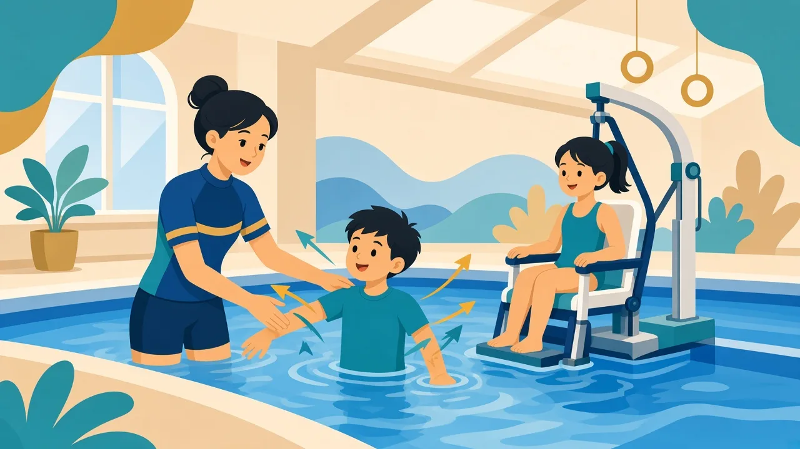

共同原則
無論肢體、視覺或聽力需要，課堂都以安全、尊嚴與可預期流程為先。教練會先了解孩子的移動方式、輔具、疲勞訊號與溝通偏好，再決定入水步驟與輔助用具（浮板、助浮衣等按需要使用）。教學重點是觀察與引導：從孩子已有的能力與優勢側開始，而不是硬套一般兒童的標準流程。

安全引導示意（非官方賽事標誌）：清楚溝通比硬背動作更重要
肢體障礙：泳池中的實務調整
- 入水／離水改為較慢、有支撐的步驟；必要時由教練或家長協助轉移，避免急拉關節。落水、上水本身也是訓練的一部分。
- 利用水的浮力減輕負重；可先練習仰浮或穩定頭部位置，建立「不會嗆水」的安全感，再談划水效率。
- 從優勢側或孩子已能做到的動作入手（例如單側划水），目標是安全前進與自信心，而非刻板模仿標準泳姿。
- 注意皮膚、支架接觸面與長時間浸水的舒適度；課後更換乾燥衣物。肌肉較緊張的孩子移動時需格外緩慢。
- 課時建議：首次試水宜短，很多家庭以約 15 分鐘起步，按反應延長；一般也不宜一次浸水過久，視疲勞與水溫調整。
視覺障礙：空間與提示
- 先以口語描述泳池環境（池邊、水深、扶梯位置），讓孩子建立心智地圖；環境盡量平坦、固定，減少臨時障礙物。
- 固定出發點與休息位置；轉身或到邊時可用聲音或輕觸提示（正式賽事中的 Tapper 概念，在教學中以溫和、預告式提示代替）。
- 避免突然從背後觸碰；先說明「我現在會扶你的手肘」。亦可讓孩子用手觸摸教練示範動作。
- 弱視孩子可配合高對比浮具與清晰的邊界標記；部分孩子的搖晃等重複動作可能與視覺補償有關，宜理解而非硬性制止。
聽力障礙：看得見的指令
- 教練面向孩子、光線充足時示範；重要指令配合手勢、圖卡或書寫板。
- 下水前先講解本節目標；水中盡量減少長句，改為短促、可重複的訊號。聽障孩子往往視覺觀察力強，示範比長篇講解更有效。
- 若使用助聽器／人工耳蝸，請家長說明是否可於水中配戴防水配件；否則下水前妥善保管（設備通常昂貴）。以視覺溝通為主。
- 緊急情況以預先約定的手勢（例如「停、扶邊」）為優先。
安全溝通：請家長主動告知的事項
若孩子有已知的發作病史、用藥或活動限制，請課前告訴教練。課堂會以預防與預案為先：熟悉孩子訊號、保護頭部與池邊、並確保有熟悉孩子的成人可即時聯絡。具體醫療安排以醫生意見為準，游泳課不能取代急救訓練或醫療判斷。
家長可如何配合？
- 提供醫療／復康師的活動限制（若有），例如承重或頸椎注意。
- 第一次可觀課，協助建立「更衣室→沖身→池邊」的固定儀式。
- 回家以短句重溫：今天做到的一件小事，比批評「未達標準泳姿」更有用。
溫馨提示：本頁為家長教育整理，供認識特殊需要與游泳教學方向參考，並非醫療診斷或治療建議。孩子個別安排請 WhatsApp 與教練商討。
家長常見問題
有支架或輪椅，泳池場地怎麼辦？
請先 WhatsApp 告知需要，我們會協助查詢更衣室通道與入水方式。不同泳池設施不一，個別安排最重要。
全盲孩子適合學游泳嗎？
可以，關鍵是環境預告與穩定的教練關係。許多視障運動員亦以游泳作為主要項目；普及課則以安全與樂趣為先。
第一次課要游多久？
寧短勿長。先看孩子對水溫、更衣室與池邊的反應；能帶著正面感受離開，比「完成一整節標準課」更重要。
延伸閱讀：游泳運動發展與分級概念 · 智力及多重障礙 · 總覽